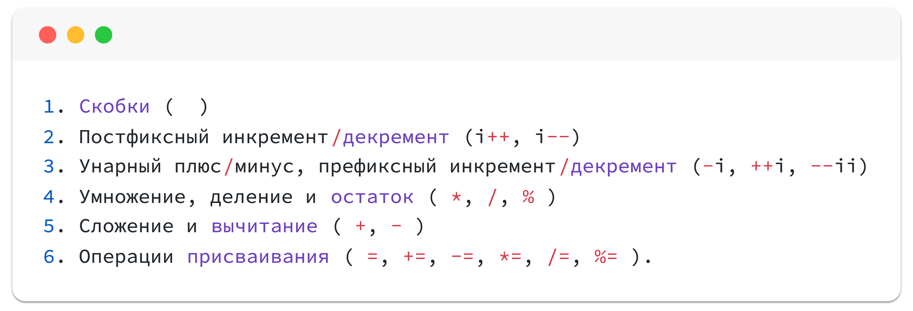

Остаток от деления. Инкремент и Декремент
Операции присваивания
Одна их самых частых операций это увеличить или уменьшить значение переменной.
Это можно сделать, изменив значение переменной, и новое значение присвоить в ту же самую переменную.
Dart - Изменение значения переменной


int value = 42;
value = value + 7; // 49
value = value - 7; // 42
// num = 42 + 7 = 49
// num = 49 - 7 = 42
Эти операции встречаются настолько часто, поэтому придумали специальные сокращенные операции для изменения данных в переменной.
Dart - Комбинированные операторы присваивания
num value = 42;
value += 7; // value = value + 7;
value -= 7; // value = value - 7;
value *= 7; // value = value * 7;
value /= 7; // value = value / 7;
value %= 7; // value = value % 7;
Инкремент и Декремент
Еще одна крайне распространенная операция - увеличение или уменьшение переменной на единицу.
Dart - Инкремент и Декремент
// Можно использовать и такую запись
value += 1;
value -= 1;
// Но придумали обозначение ещё удобнее
value++; // Инкремент
value--; // Декремент
Инкремент ++ делает то же самое, что и +=1, но более простым способом. То же самое верно и для декремента --.
Работает только при увеличении или уменьшении числа на единицу
Это выглядит просто, но операции инкремента и декремента более интересные, чем вы могли подумать. Оба оператора инкремента и декремента имеют две формы, которые очень важно различать: префиксную и постфиксную.
Префиксная форма
Префиксная форма изменяет значение переменной перед ее использованием. Префиксный инкремент возвращает увеличенное значение.
Dart - Префиксный инкремент
int a = 10;
int b = ++a;
print(a); // a = 11
print(b); // b = 11
Сначала значение переменной a увеличивается на единицу, затем значение присваивается переменной b. Таким образом, a и b оба равны 11.
Постфиксная форма
Постфиксная форма изменяет значение переменной после ее использования. Постфиксный инкремент возвращает значение до увеличения на единицу:
Dart - Постфиксный инкремент
int a = 10;
int b = a++;
print(a); // a = 11
print(b); // b = 10
Сначала значение переменной a присваивается переменной b, а затем значение переменной a увеличивается на единицу. Таким образом, a равно 11, а b равно 10.
Порядок приоритета операций

Сценарии использования % и условных конструкций
Деление числа на цело
Очень часто необходимо проверить, делится ли на цело число. В этом помогает операция остаток от деления %.
Потому что если остаток от деления равен 0, то значит число делится на цело!
Например, проверим, делится ли число на 5.
Dart - Проверка кратности 5
int value = 25;
if (value % 5 == 0) {
print("Число $value кратно 5");
} else {
print("Число $value на цело не делится на 5");
}
Например, проверим, делится ли число на 5 и на 3 одновременно.
Dart - Проверка кратности 5 и 3
int value = 15;
if ( (value % 5 == 0) && (value % 3 == 0) ) {
print("Число $value кратно 5 и 3 одновременно");
} else {
print("Число $value на цело не делится на 5 и 3 одновременно");
}
Например, проверим, четное ли число (т.е. делится ли оно на цело на 2).
Dart - Проверка на четность
int value = 42;
if ( value % 2 == 0 ) {
print("Число $value чётное");
} else {
print("Число $value нечётное");
}
Получение числовых разрядов
Получение числовых разрядов: единицы, десятки, сотни, тысячи и т.д.
Dart - Получение разрядов (вариант 1)
int value = 2354;
// Разбить число на разряды
print(value % 10); // 4 Единицы
print(value % 100); // 54 Десятки
print(value % 1000); // 354 Сотни
print(value); // 2354 Тысячи
// Получить каждое число по отдельности
print( (value / 1000).truncate() ); // 2
print( (value / 100).truncate() % 10 ); // 3
print( ((value % 100) / 10).truncate() ); // 5
print( value % 10 ); // 4
Чтобы сразу получить целочисленный результат деления, используем оператор ~/.
Dart - Получение разрядов (вариант 2)
int value = 2354;
print( value ~/ 1000 ); // 2
print( (value ~/ 100) % 10 ); // 3
print( (value % 100) ~/ 10 ); // 5
print( value % 10 ); // 4